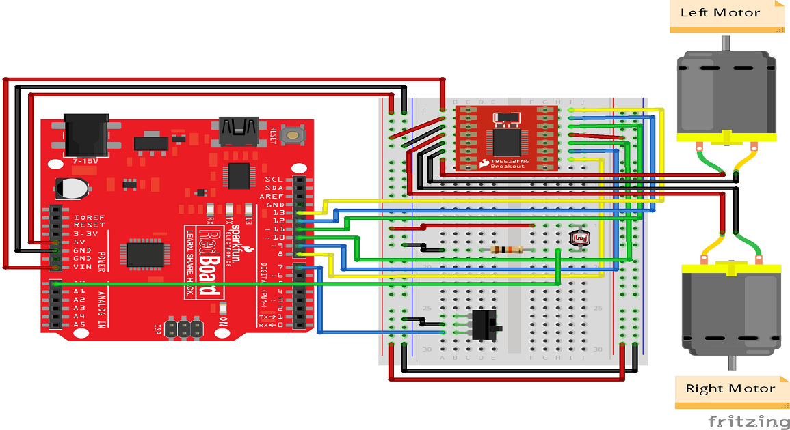

If you want an easy project to complete in a day or so, or something to introduce kids to the world of robots and electronics, make this light-following robot your weekend project. The concept is very simple, and could be built in an infinite number of ways, with parts that you may already have on hand. For now, though, I’ll tell you exactly how I made mine.
An obvious use is to navigate through complex surroundings where electromagnetic radiation travels one path and not another.
A second use is to be guided in on something. This may be by it shining a light and homing in on a reflection, or it may be by an object emitting light as a guiding beacon.
In the latter case, one could imagine airports in terrain too complex for radar (too many false echoes) or too difficult to reach to build a radar system pointing a highly directional searchlight at a robot aircraft.
1.2 small DC gear reduction motors—what’s used here can be found as a “micro gear box speed reduction motor,” and is available in a variety of RPM specifications
2. 2 CR2032 coin cell batteries
3. 6 LDRs, or Light-Dependent Resistors
4. Wheels purchased or salvaged from a toy car
5. ½-inch-thick wood, medium-density fiberboard, or other similar material
6. Perfboard (optional)
7. Soldering iron
8. Glue gun
9. Drill with bit set and hole saw
10. Router, mill, table saw, or other tool for adding cavities to wood
